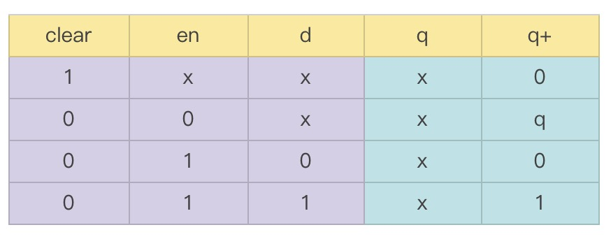
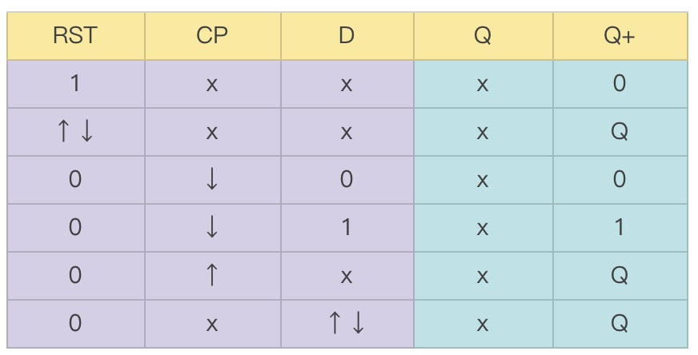
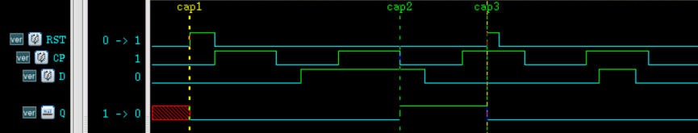
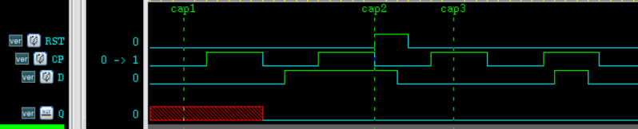
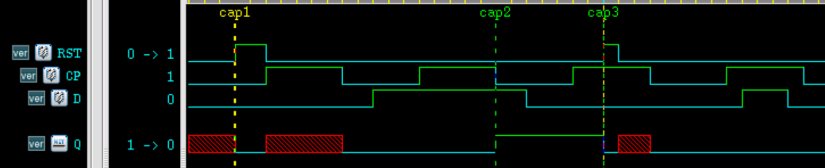
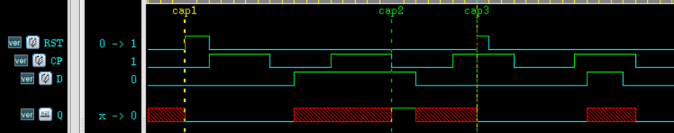

Sequential logic UDP and combinational logic UDP differ in both definition form and behavioral functionality. The main differences are as follows:
- 1. The output port of a sequential logic UDP must be declared as reg type.
- 2. Sequential logic UDP can be initialized with an initial statement.
- 3. The state table format is also slightly different:
... : <current_state> : <next_state> ;
- 4. Each row of the sequential logic UDP state table consists of 3 parts: input part, current state, and output state, separated by colons ":".
- 5. current_state is the current value of the output register, and next_state is the new value of the output register. next_state is determined by the input and current_state together.
- 6. The input entries in the state table can be in the form of levels or transition edges.
UDPs representing sequential logic are mainly divided into 2 types: level-triggered UDP and edge-triggered UDP.
Level-triggered UDP
The output of a level-triggered UDP changes according to changes in the input level state.
The functional description of a D latch with a clear terminal is:
- When the clear terminal is 1, the output is always 0;
- When the clear terminal is 0 and the enable control terminal is 1, the latch is transparent, and the output equals the input;
- When the clear terminal is 0 and the enable control terminal is 0, the latch is in a hold state, and the output remains unchanged.
Its truth table is (q represents the current state, q+ represents the next state):

In fact, the process of writing a UDP can be understood as the process of writing a truth table in a different format.
The UDP for the D latch with a clear terminal can be described as follows:
output q ;
reg q ;
input d, en, clear ;
initial
q = 0 ;
table
//clear en d :q :q+ ;
1 ? ? :? :0 ; //clear
0 0 ? :? :- ; //"-" means stable
0 1 0 :? :0 ; //q = d
0 1 1 :? :1 ;
endtable
endprimitive
Of course, you can also declare their types when listing the port signals and assign initial values.
output reg q = 0,
input clear, en, d);
......
endprimitive
Edge-triggered UDP
The output of an edge-triggered UDP changes according to input transition edges and/or changes in input level states.
Directly give the "truth table" of a D flip-flop with an asynchronous reset terminal (RST) that captures signals on the falling edge of the clock:

It can be seen that the concept of rising and falling edges is also added to this "truth table" to facilitate writing UDP code.
The sequential logic UDP description of this D flip-flop is as follows:
output reg Q = 0,
input RST, CP, D);
table
//RST CP D :Q :Q+ ;
//(1) Clear
1 ? ? :? :0 ; //Clear when RST=1
(??) ? ? :? :- ; //Ignore RST edge changes
//(2) Capture on clock falling edge
0 (10) 0 :? :0 ; //Capture signal on clock falling edge
0 (10) 1 :? :1 ;
//possible negedge
0 (1x) ? :? :- ; //Maybe hold at clock falling edge
0 (x0) ? :? :- ;
//(3) Hold on clock rising edge
0 (0?) ? :? :- ; //Hold at clock rising edge
//possible posedge
0 (x1) ? :? :- ; //Maybe hold at clock rising edge
//(4) When there is no clock edge change, even if data has transitions, the output still holds
0 ? (??) :? :- ;
endtable
endprimitive // D_TRI
A simple simulation of this flip-flop is performed, and the testbench is described as follows.
Example
module test ;
reg D, CP = 0 ;
reg RST ;
wire Q ;
always #5 CP = ~CP ;
//data driver
initial begin
D = 0 ;
#12 D = 1 ;
#10 D = 0 ;
#14 D = 1 ;
#3 D = 0 ;
#18 D = 0 ;
end
//reset driver
initial begin
RST = 0 ;
#3 RST = 1 ;
#2 RST = 0 ;
#22 RST = 1 ;
#1 RST = 0 ;
end
D_TRI u_d_trigger(Q, RST, CP, D);
initial begin
forever begin
#100;
//$display("---gyc---%d", $time);
if ($time >= 1000) begin
$finish ;
end
end
end
endmodule // test
The simulation results are as follows.
As can be seen from the figure, at time cap1, the Q terminal is reset and cleared; at time cap2, i.e., the clock falling edge, the output captures the D terminal input 1; at time cap3, the Q terminal is cleared again. This is consistent with the design.

It should be noted that:
For multiple input parts in each row of the state table, there can be at most one transition edge. For example, the following state table expression is incorrect.
......
(10) (10) 1 :? :1 ;
endtable
The priority of level-sensitive state table input entries is higher than that of edge-sensitive state table input entries. If both occur at the same time, the output state is determined by the level-sensitive state table.
For example, in the above D flip-flop, RST can be regarded as level-triggered, and CP can be regarded as edge-triggered. When the RST rising edge and the CP falling edge arrive at the same time, the output will become 0, as at time cap in the figure below. Of course, in actual timing, the clock and reset edges should be avoided from arriving simultaneously.

In an edge-triggered UDP, the change of the output signal must be specified for every input signal when an edge changes; otherwise, the output may become X at the transition edge of that signal.
For example, if the description of RST edge changes is missing:
//(??) ? ? :? :- ; //忽略 RST 边沿变化
Then the output will become x at the RST falling edge.

As another example, if the description is missing for when the clock is stable and the D terminal data changes:
//(4) 非时钟沿变化时，即便数据有跳变，输出仍然保持
//0 ? (??) :? :- ;
Then the output will also become x at the edges where the D terminal data changes.

UDP State Table Symbol Abbreviations
The abbreviations for levels and transition edges in the UDP state table and their explanations are shown in the table below.
| Abbreviation | Meaning | Description |
|---|---|---|
| ？ | 0, 1, x | Can only be used for inputs |
| b | 1, 1 | Can only be used for inputs |
| - | Hold the original value unchanged | Can only be used for outputs |
| (ab) | Signal changes from a to b | Used as an indication of the input edge |
| r | (01) | Rising edge of the signal |
| f | (10) | Falling edge of the signal |
| p | (01), (0x), or (x1) | Possible rising edge of the signal |
| n | (10), (1x), or (x0) | Possible falling edge of the signal |
| * | (??) | Any edge change of the signal |
UDP Design Guidelines
When choosing whether to use module or primitive in digital design, comprehensive considerations should be made based on design requirements, complexity, and other factors. Some guiding suggestions are given below.
- UDP can only perform functional modeling and cannot model circuit timing or manufacturing processes (e.g., CMOS, TTL, etc.). The main purpose of using UDP is to model digital designs in a concise form similar to a truth table, while module can include circuit timing and specify manufacturing processes.
- UDP can only implement digital designs with one output port. When there is more than one output port, only module can be used.
- UDP is implemented using lookup tables in memory. When there are many input ports, the combinations of input ports will grow exponentially. The number of UDP input ports is also limited by the simulator. Therefore, UDP is not suitable when there are many input ports.
- After choosing to use UDP, be sure to describe the UDP state table completely with abbreviation symbols as much as possible. If input combinations are missed, the output may appear as X, causing design errors.
Click me to share notes
<p style="font-size:14px;">The note must be an extension of the content of this article!</p><br> <p style="font-size:12px;"><a href="../tougao.html" target="_blank">Submit an article, click here</a></p> <p style="font-size:14px;"><a href="./runoob-user-test-intro.html" target="_blank">How to obtain registration invitation code</a></p> <h3 class="text-muted"><i class="fa fa-info-circle" aria-hidden="true"></i> You must <a href=".." class="runoob-pop">log in</a> before sharing notes!</h3> <p><a href="./runoob-user-test-intro.html" target="_blank">How to obtain registration invitation code</a></p>